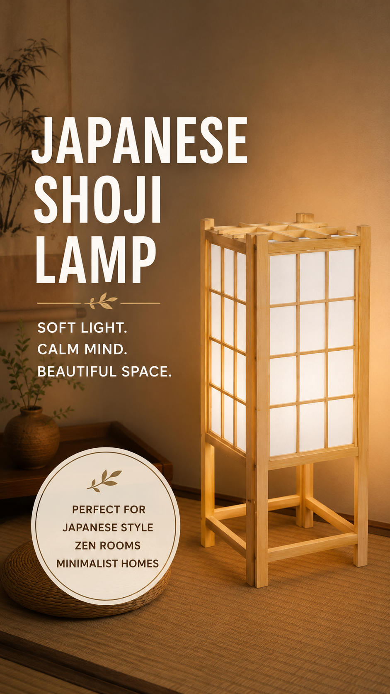

Create a warm, peaceful atmosphere with this elegant Japanese Shoji Floor Lamp. Inspired by traditional Japanese interiors, this lamp fits beautifully in Japandi homes, minimalist bedrooms and cozy reading spaces.
View on Amazon →A Shoji floor lamp is more than lighting. It creates a calm atmosphere that helps your room feel brighter, warmer and more relaxing. Perfect for anyone who loves Japanese design without spending thousands on a full room makeover.
Customers love the warm glow, elegant appearance and relaxing atmosphere. Many buyers mention that it instantly transforms an ordinary room into a cozy Japanese-inspired space.
Japanese interior design continues to grow in popularity around the world. Soft lighting, natural materials and minimalist spaces create a relaxing home that feels peaceful after a busy day. A Shoji floor lamp is one of the easiest ways to achieve that look.
Yes. It provides soft ambient lighting that is perfect for bedrooms, living rooms and reading areas.
Absolutely. The simple wooden frame and soft paper-style shade blend perfectly with Japandi, Scandinavian and minimalist decor.
Most buyers report that assembly is simple and only takes a few minutes.
If you're looking for an easy way to create a warm, relaxing Japanese-inspired room, this Shoji floor lamp is one of the best upgrades you can make. Its timeless design, soft lighting and minimalist style make it a beautiful addition to almost any home.
As an Amazon Associate I earn from qualifying purchases.